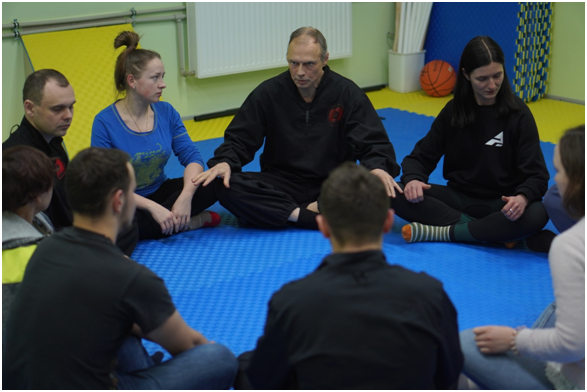
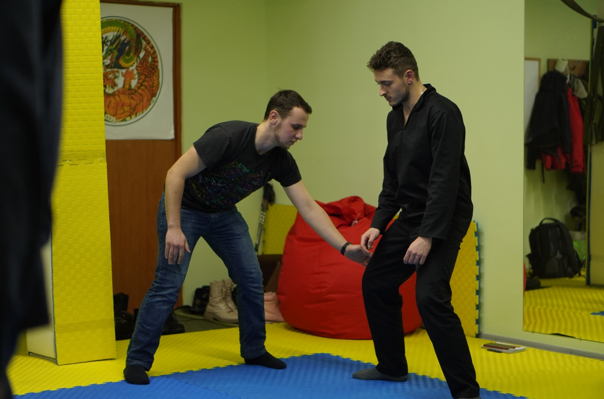

+38(063)855 25 02
+38(063)855 25 02 Городоцька, 174
Городоцька, 174Даоський Цигун
Програма занять:
✔ Масаж активних точок і зон тіла для здоров'я та довголіття;
✔ Оздоровлення тіла з допомогою руху, пози, жесту;
✔ Методи управління своїм внутрішнім станом, вміння керувати емоціями;
✔ Формування оптимістичного погляду на життя;
✔ Звільнення організму від результатів стресу, задавнених негативних емоцій;
✔ Прийоми даоського масажу та самомасажу.
✔ Оздоровлення нирок;
✔ Покращення роботи головного мозку: здатність засвоювати інформацію, нестандартні ходи мислення, профілактика інсульту;
✔ Вправи для підвищення імунітету, протипростудні вправи.
✔ Дихальні вправи, робота з діафрагмою, оздоровлення та підтримка легень;
✔ Оздоровлення печінки, усунення дратівливості;
✔ Вправи на рівновагу;
✔ Різноманітні вправи на розтяжку.
Що таке цигун:
Цигун (або Чигун) - стародавнє китайське мистецтво, основним завданням якого є:
Розпізнати хворобу, що зароджується на етапі, коли симптоми іще не виникли. І виправити відхилення. Або взагалі - вибудувати спосіб життя так, щоб ці симптоми навіть не виникали.
Слово «цигун» складається з двох ієрогліфів: «ци» – енергія і «гун» – робота. По суті, цигун – це робота з енергією.
Згідно з теорією цигун, внутрішня енергія організму рухається разом з кров'ю по судинах. І вважається, що доки не порушена циркуляція енергії - людина здорова. А коли циркуляція енергії порушується - це початок хвороби.
Циркуляція енергії може порушуватись від багатьох факторів: людина щось не те з'їла, переїла, недоспала, стомилась або навпаки - мало рухалась, чи пережила емоцію сильно, тощо.
В цигун нашої Школи широко застосовується неканонічній підхід до навчання. Ми вчимо інтуїтивно відчувати міру у виконанні вправ, можливостей підлаштувати вправу під себе. Тому що всі люди різні: з різними можливостями, різним станом здоров'я.
Але цей підхід вимагає передачі знань особисто, "від серця до серця". Тому онлайн навчання тут не застосовується.
Для чого нам займатися цигун:
✔ Для довгого і щасливого життя.
Даоси ще в древності зрозуміли: щоб насолодитися життям і скористатись його благами - потрібно
багато тренуватися, в тому числі і в цигун.
✔ Для лікування і оздоровлення організму;
✔ Підвищення фізичних, енергетичних, психічних можливостей
організму;
А саме: витривалість, гнучкість, вміння зосередитись, можливість протистояти стресу, та інші.
✔ Для гармонізації усіх фізичних та психічних процесів організму;
✔ Відновити баланс емоцій, укріпити впевненість та любов до себе;
✔ Можливість знайти свою точку психологічної опори;
✔ Навчитись отримувати задоволення від кожної миті життя.
 Переваги навчання у нас:
✔ В нашій Школі - цілісна система знань (а не набір вправ з різних систем);
✔ У всіх вправ є загальна ціль: збереження та укріплення здоров'я;
✔ В системі знань нема протиріч, всі вправи пов'язані і допомагають освоювати одна одну;
✔ Великий вибір інструментів (вправ і комплексів) - можливо підібрати вправи для індивідуальної практики (з врахуванням віку, підготовки, фізичних можливостей);
✔ Добре пропрацьована техніка безпеки (котра часто зовсім відсутня в інших школах).
Заняття з цигун у Львові проводяться за адресою:
вул. Городоцька, 174 (мотозавод)
Розклад занять:
Субота - 14:00-16:00
Запис на тренування: Тел./Telegram/Viber: +38 (063) 855 25 02
Наша сторінка в інстаграм: shou_tao_lviv
Наша сторінка в фейсбуці: shou.tao.lviv.group